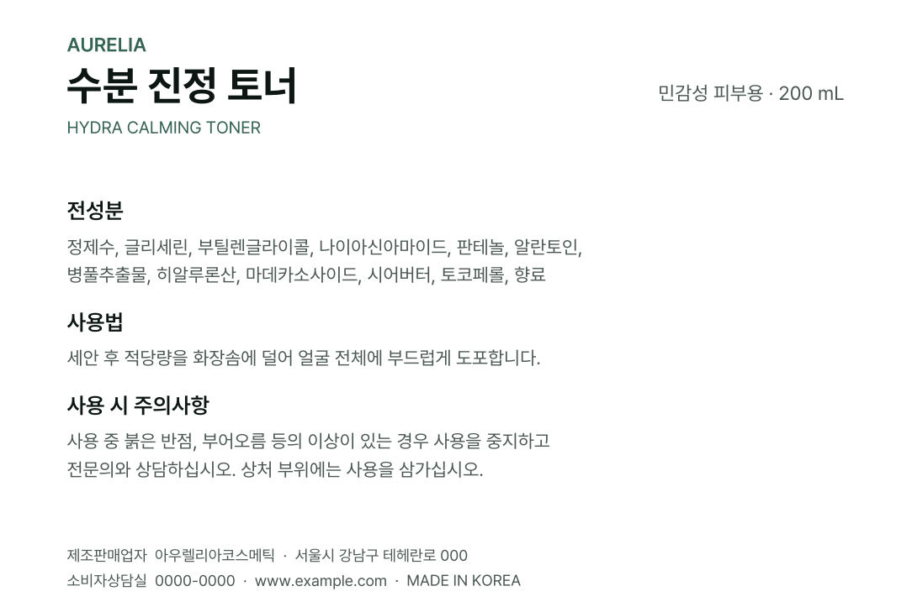
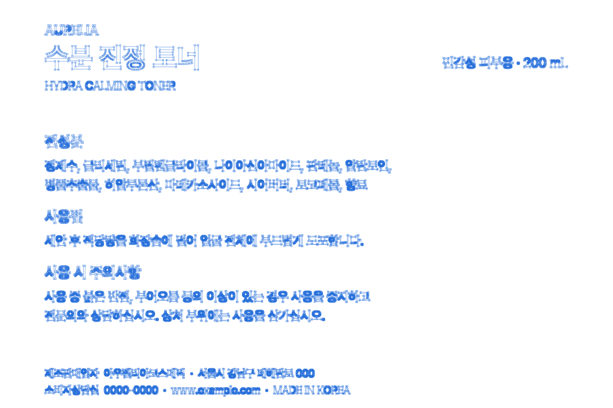
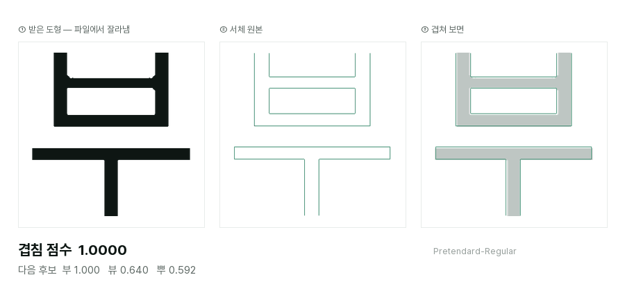
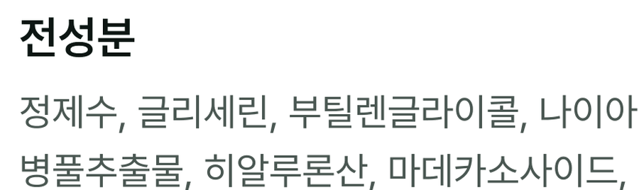
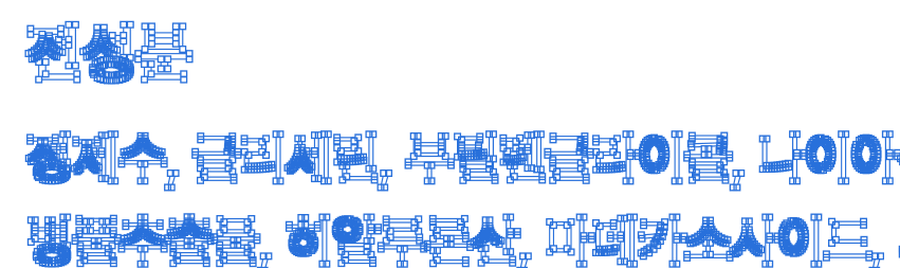
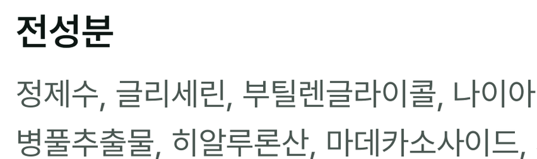
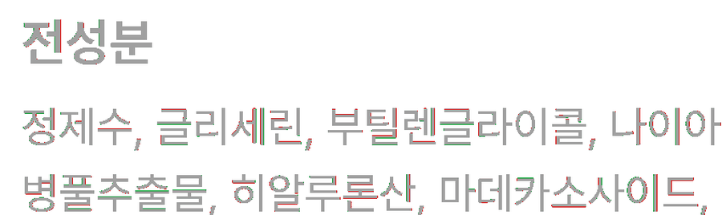
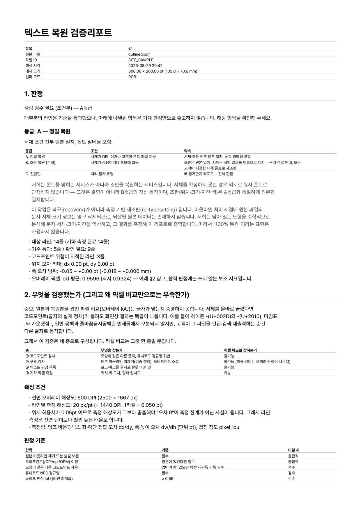
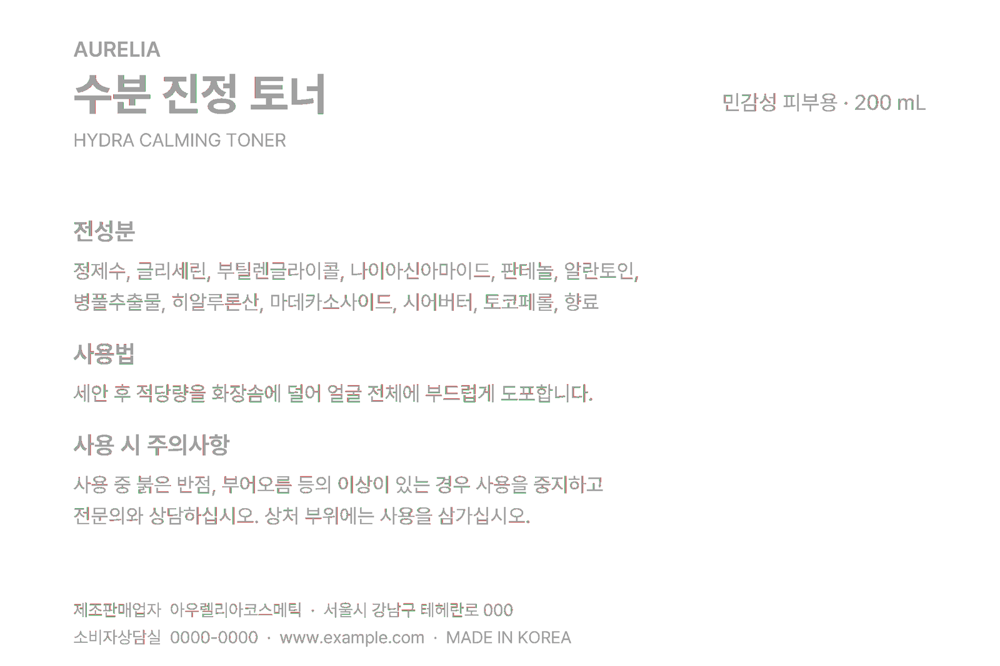
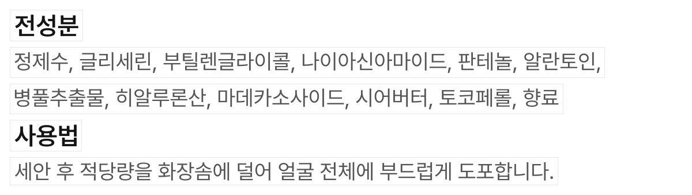

오타 하나에 견적이 붙습니다
전화번호 한 자리, 전성분 한 단어를 고치려고 원본 작업 파일을 다시 찾거나 처음부터 조판을 다시 짜야 합니다.
인쇄소에 넘긴 .ai · PDF에서 텍스트가 아웃라인 처리돼 한 글자도 수정할 수 없나요. AI가 남은 도형을 서체 원본과 대조해 무슨 글자였는지 알아내고, 크기·자간·행간을 역산해 같은 자리에 진짜 텍스트를 되돌려 놓습니다.


아웃라인(윤곽선 만들기)은 인쇄 사고를 막으려고 하는 필수 작업입니다. 문제는 그 순간 글자가 도형 덩어리가 되어 되돌릴 수 없다는 것입니다.
전화번호 한 자리, 전성분 한 단어를 고치려고 원본 작업 파일을 다시 찾거나 처음부터 조판을 다시 짜야 합니다.
퇴사한 디자이너, 계약이 끝난 외주사, 사라진 하드디스크. 손에 남은 건 인쇄용 최종 파일 한 개뿐입니다.
눈대중으로 다시 조판하면 자간·행간이 미묘하게 어긋납니다. 재인쇄본과 기존 인쇄본이 달라 보이는 사고가 여기서 납니다.
아웃라인 처리된 파일에는 «무슨 글자였는지»가 남아 있지 않습니다. 남은 건 좌표뿐입니다. 그래서 AI가 그 도형을 272종 서체의 글자 원본과 픽셀 단위로 겹쳐 보며 어느 글자·어느 서체였는지 찾아냅니다.

스캔 글자를 읽는 기술이 아닙니다. 이 파일에는 «읽을 픽셀»이 아니라 정확한 벡터 좌표가 있고, 그걸 그대로 씁니다.
서체마다 글자를 실제로 그려 보고, 받은 도형과 얼마나 겹치는지를 숫자로 잽니다. 가장 잘 겹치는 것이 답입니다.
예를 들어 대문자 I와 소문자 l은 서체에 따라 모양이 완전히 같습니다. 겹침 점수가 1.0000 으로 똑같이 나옵니다. 모양만 보면 절대 가릴 수 없어서, 이런 글자는 앞뒤 문맥을 보는 별도 검증을 한 번 더 거칩니다.
전 과정이 자동이고, 보통 2~3분이면 끝납니다. 진행 상황은 화면에서 단계별로 보실 수 있습니다.
인쇄용으로 넘어온 상태. 글자처럼 보이지만 전부 도형입니다.

일러스트레이터에서 전체 선택한 실제 화면입니다. 글자가 아니라 좌표 11,573개가 있습니다.

같은 자리에 편집 가능한 텍스트가 들어갔습니다. 보이는 것은 하나도 달라지지 않았습니다.

원본 위에 복원본을 포개어 어긋난 픽셀을 찾습니다. 붉고 푸른 테두리가 글자 가장자리에만 남아 있으면 정상입니다.

네 장 모두 같은 글자, 같은 배율입니다. 위에서 아래로 내려오며 무엇이 달라지는지만 보시면 됩니다 — 겉모습은 그대로이고, 달라지는 것은 「고칠 수 있는가」 하나뿐입니다.
확신이 없으면 손대지 않습니다. 서체가 확정되지 않거나 조판값이 어긋나는 줄은 복원하지 않고 원본 도형 그대로 남깁니다. 그럴듯하지만 틀린 결과가 이 일에서 가장 나쁜 실패이기 때문입니다.
무엇을 어떻게 했는지, 무엇을 못 했는지까지 함께 드립니다. 믿어달라고 하는 대신 확인하실 수 있게 합니다.
일러스트레이터에서 열어 글자를 더블클릭하면 바로 수정됩니다. 복원한 텍스트는 별도 레이어에 들어가 원본 요소와 구분됩니다.

줄별 복원 여부, 사용된 서체·크기·자간, 위치 오차 수치, 그리고 복원하지 않은 줄과 그 이유까지 적혀 있습니다.

원본 위에 복원본을 포개어 렌더링한 검사 이미지입니다. 디자인이 바뀌지 않았다는 것을 눈으로 확인하실 수 있습니다.

«이건 글자가 아니라 로고인데»를 잡으실 수 있게, 텍스트로 판정한 도형을 줄 단위 이미지로 전부 보여 드립니다.

회색은 완전히 겹친 곳, 붉고 푸른 테두리는 어긋난 픽셀입니다. 어긋남이 글자 가장자리에만 남아 있는지 보시면 됩니다.
어떤 서체를 썼고 임베딩이 허용되는지 적어 드립니다. 상용 폰트 파일은 결과물에 넣지 않습니다 — 이름과 구매 경로만 알려 드립니다.
복원본을 원본 위에 정확히 포개어 렌더링한 뒤 픽셀이 어긋나는 곳을 찾습니다. 아래는 실제 검사 이미지입니다.
이 페이지의 모든 이미지와 수치는 저희가 만든 가상 샘플 라벨을 실제 복원 시스템에 통과시켜 나온 결과입니다. 연출하거나 손보지 않았고, 고객 파일도 아닙니다. 복원하지 않은 3줄은 삭제되지 않고 원본 도형 그대로 남아 있습니다.
파는 쪽이 먼저 말씀드리는 게 맞다고 생각합니다.
서체를 확정하지 못한 줄은 일부러 손대지 않습니다. 몇 줄이 되살아나는지는 돌려본 뒤 숫자로 알려 드립니다.
글자 도형 정보가 아예 없기 때문입니다. .ai 또는 .pdf여야 하고, «PDF 호환 파일 만들기»가 켜져 있어야 합니다.
폰트 파일은 법으로 프로그램처럼 보호됩니다. 배포가 허용된 서체로 대체 임베딩하거나, 보유하신 정품으로 열리게 만듭니다.
인쇄에 넘기시기 전에 일러스트레이터로 한 번 열어 확인해 주세요. 저희 경험상 그 확인에서만 잡히는 문제가 있었습니다.
요금을 받지 않습니다. 정식 요금은 아래 기준으로 준비하고 있습니다.
원본 서체를 쓸 수 있는 경우
준비 중
위치·크기·자간을 그대로 되살립니다
준비 중
되살릴 수 없다고 판단되는 경우
0원
복원 대상인지는 파일을 보내지 않고 브라우저 안에서 먼저 알려 드립니다. 보낼지는 그다음에 정하시면 됩니다.
보내주신 파일은 복원 목적 외에 사용하지 않으며 72시간 뒤 자동 삭제됩니다. 비밀유지약정이 필요하시면 먼저 말씀해 주세요.